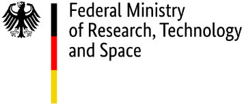

BMFTR Project: PADSE. Call: Trust in democracy and the state: Recognizing and countering digital disinformation.
[2026 - 2029]
Person-centered, audio- and voice-based deepfake and shallowfake detection.
Partners: P. Aichroth (Fraunhofer IDMT), W. Runde (Deutsche Welle)
TAB Research Group: EvaKIBau. Call: Thuringia FTI guideline PERSONEN.
[2026 - 2028]
Engineers in dialogue with LLMs: Evaluation of the use of generative AI in construction materials development and damage analysis.
Partners: IAB Weimar, MFPA Weimar
EU-Horizon Project: OpenWebSearch.EU
[2022 - 2026]
Piloting a cooperative open web search infrastructure to support Europe's digital sovereignty.
Partners: M. Granitzer (Passau University), M. Potthast (Leipzig University) and 11 other European partners
[
publications]
BMFTR Project: SKILL
[2021 - 2025]
An AI social science lab for for inquiry-based learning.
Partners: J. Neyer and K. Girgensohn (European University Viadrina), B. Fröhlich (Bauhaus-Universität Weimar)
[project page:
ENS] [
publications]
BMBF Project: The Immersive Web Observatory
[2018 - 2025]
Exploiting the Internet Archive's web archive for smart and immersive applications in economy, society, and science.
Partners: B. Fröhlich, M. Hagen (Bauhaus-Universität Weimar), M. Potthast (Leipzig University)
[
research]
Adobe Research Grant: Deep Text Analytics
[2015 - today]
Basic research in the cross section of information retrieval and machine learning.